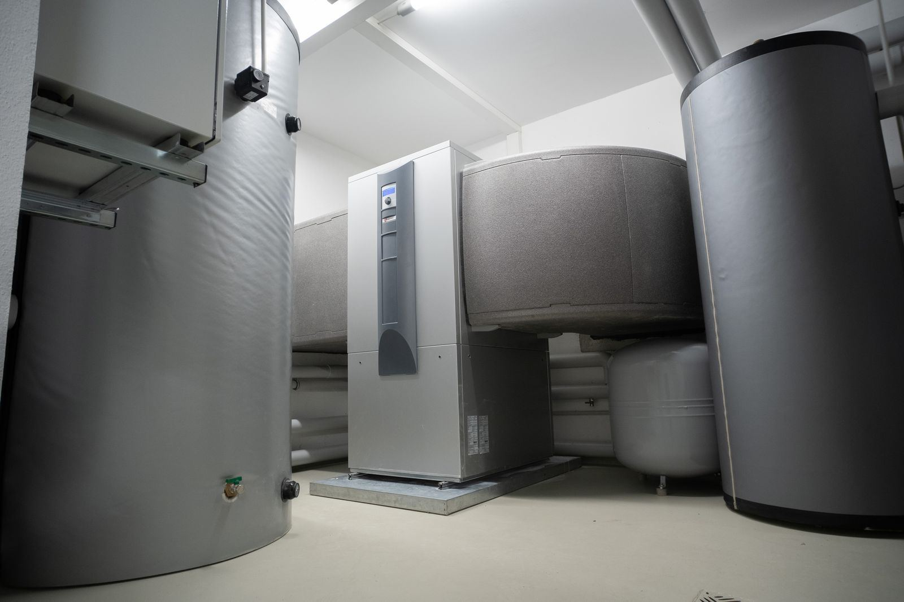

A cold tap costs a business far more than it costs a household. A kitchen cannot sanitize or run its dish line, a laundromat's machines sit idle, salon clients wait with wet hair, and apartment tenants start filling the voicemail before seven in the morning. Gyms feel it the moment a class lets out. Commercial water heating is built around those peaks: high-input gas tanks, multi-element electric units, racks of tankless heaters, or a boiler feeding a storage tank, often tied to a recirculation loop so hot water is ready at distant fixtures. Across Louisville, KY, we service all of those setups with one priority in mind: getting you back to business.
A commercial hot water setup is more than one big tank, and we service all of them. That includes high-input gas storage heaters, commercial electric units with multiple elements, tankless heaters banked together on a manifold, and boilers paired with indirect storage. It includes the recirculation loop, with its pump, check valves, and balancing valves, which cuts the wait at distant sinks. And it includes the temperature controls: many businesses store water at 140 degrees or higher to limit bacterial growth, then rely on thermostatic mixing valves to deliver safe temperatures at showers and hand sinks. For any new equipment, we start from your actual peak draw and recovery needs rather than copying the old nameplate.
We plan around your hours, not ours. Replacements are arranged before opening, after closing, or on the slowest day of your week, and where the system has more than one heater, we keep at least one running while the other is serviced. There is usually more paperwork on a commercial job, and we handle the coordination: permits and inspections, verifying gas supply and vent sizing, and meeting code requirements for larger equipment. For commercial water heater service in Louisville that respects your operating hours, call (502) 205-4594.
Our two most requested services are Water Heater Installation in Louisville and Water Heater Replacement in Louisville. That's the place to start for most homes.

How to Tell Something Is Wrong
Recognizing the warning signs early can save you money and keep a slow drip from turning into a flooded utility room. Here are the most common indicators that it's time to call a professional:
- Energy costs climbing while usage stays flat
- Long waits for hot water at sinks far from the heater
- Rumbling, popping, or banging from a heavily used tank
- Rust-colored water, leaks at fittings, or moisture under the heater
- Equipment approaching the end of its expected service life
- Trouble reaching sanitation temperatures in the kitchen
- Lukewarm water at the exact time you need the most
- Unsteady delivery temperatures that suggest a failing mixing valve
Act Before It Gets Worse
A worn-out anode rod, a sediment-choked tank, or a weak thermocouple rarely fixes itself, and the repair usually costs more the longer it waits. If you notice any of these signs, contact Louisville Water Heater at (502) 205-4594 for a prompt inspection.
Get Commercial Water Heaters Handled Today
We'll diagnose the problem and give you a straight answer on the fix.
Tap to Call (502) 205-4594Commercial Water Heaters FAQ
Why Professional Commercial Water Heaters Matters
The scale of commercial equipment changes the job. Gas input is often several times that of a home unit, which affects gas line sizing, meter capacity, combustion air, and venting. Electric models can draw enough current to require serious service capacity. Storage often runs at 140 degrees or higher, so thermostatic mixing valves are needed to deliver safe water at fixtures, and those valves must be matched to the flow and tested. Recirculation loops need the right pump, working check valves, and balancing, or hot water takes the easy path and distant fixtures stay cold.
And commercial jobs always come with a clock. Every hour without hot water is an hour of lost business, so the job has to be planned: permits pulled, inspections scheduled, gas and electrical capacity confirmed, and the right equipment on site before anything is disconnected. Our team works around your hours and, on systems with more than one heater, keeps hot water flowing while the other is replaced. You get the correct equipment, code-compliant work, and a schedule that protects your revenue.
Our Commercial Water Heaters Process
We work through a clear, repeatable process so you always know what's happening and what it will cost. Here's how we handle commercial water heaters from start to finish:
Demand Assessment
Before recommending anything, we estimate what your operation draws during its rush and how quickly the heaters must bounce back.
Equipment Plan
For businesses that cannot go without, we design banked or tandem systems so one heater can be serviced while the other carries the load.
Work Around Your Hours
We book the work around your operating hours and coordinate permits, gas supply checks, and venting so the job wraps up when promised.
Startup and Follow-Through
We run the system under real demand before we leave, and you get a maintenance plan to keep it performing.
Tips to Keep Your Water Heater Healthy
A few preventive steps can help you avoid a cold shower or a wet floor down the road. Here's where to begin:
- Check anodes on a schedule matched to your volume and water quality
- Test thermostatic mixing valves periodically to confirm safe delivery temperatures
- Log water temperatures at key fixtures so drift is caught early
- Schedule upgrades during slow periods instead of waiting for a breakdown
- Confirm the recirculation loop still delivers hot water quickly to the far fixtures
- Flush commercial tanks more often than residential ones, often every few months in heavy use or hard water
- Do not store supplies against the equipment or block air openings
Should You DIY or Call a Pro?
Online videos may help in a pinch, yet lasting repairs and code-compliant installs depend on correct venting, proper relief valve discharge piping, and a trained technician. Here's how the two approaches stack up:
| Consideration | DIY Attempt | Professional Service |
|---|---|---|
| Sizing | Copy the old nameplate | Calculated from your busiest hour |
| Combustion Air | Meter size never considered | Gas supply, meter, and vent verified |
| Sanitation Temperature | Delivery temperatures left to chance | Safe delivery temperatures at every fixture |
| Recirculation | Loop never balanced | Fast hot water at every fixture |
| Code Compliance | Code items overlooked | Installed to local code |
| Downtime | Swap done during operating hours | Work scheduled around your hours |
Talk to Our Commercial Water Heaters Team
Every day a leak or a failing part goes unchecked puts more stress on the tank. Get Louisville Water Heater on the job today.
Get Help: (502) 205-4594Commercial Water Heaters Across the Louisville Area
Our technicians handle commercial water heaters throughout Louisville and the surrounding communities, with the same upfront pricing everywhere we work.